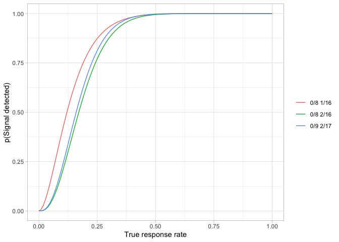

Introduction
The package mtdesign provides implementations of both Simon (1989) and Mander & Thompson (2010). Other implementations of Simon’s methods are available - for example, the ph2simon function in the clinfun package (Seshan 2018), but these do not provide easy access to non-optimal solutions in the way that mtdesign does. I am not aware of any other R-based implementations of Mander & Thompson’s extension to Simon.
Installation
Once available on CRAN, you can install mtdesign in the usual way:
install.packages("mtdesign")
You can install the development version of mtdesign from GitHub with:
devtools::install_github("openpharma/mtdesign")
Example
Suppose that treatments with a response rate of less than 5% are of no interest but those with a response rate of at least 25% are worthy of further development. A Simon’s 2-stage design to seek an efficacy signal with a significance level of 5% and a power of 80% is required.
library(mtdesign)
library(knitr)
library(dplyr)
#>
#> Attaching package: 'dplyr'
#> The following objects are masked from 'package:stats':
#>
#> filter, lag
#> The following objects are masked from 'package:base':
#>
#> intersect, setdiff, setequal, union
simonDesign <- obtainDesign(p0 = 0.05, p1 = 0.25, alpha = 0.05, beta = 0.2, mander = FALSE, parallel = FALSE)
simonDesign %>%
select(-Alpha, -Beta, -p0, -p1, -PETAlt, -AveSizeAlt) %>%
kable(digits = c(0, 0, 0, 0, 3, 3, 2, 1, NA))| nTotal | nStage1 | rTotal | rFutility | Type1 | Type2 | PETNull | AveSizeNull | Criterion |
|---|---|---|---|---|---|---|---|---|
| 17 | 9 | 2 | 0 | 0.047 | 0.188 | 0.63 | 12.0 | optimal |
| 16 | 12 | 2 | 0 | 0.043 | 0.199 | 0.54 | 13.8 | minimax |
The table shows that the optimal design for these requirements is 0/9 2/17. The expected sample size is 12.0 and the probability of early termination is 63%. The significance level actually achieved is 4.7% and the power level achieved is 100% - 18.8% = 81.2%.
The power curves for both designs are easily plotted.
powerPlot(simonDesign)Obtaining the equivalent Mander & Thompson designs requires only a small change to the calls.
manderDesign <- obtainDesign(p0 = 0.05, p1 = 0.25, alpha = 0.05, beta = 0.2)
manderDesign %>%
select(-Alpha, -Beta, -p0, -p1) %>%
kable(digits = c(0, 0, 0, 0, 3, 3, 2, 2, 2, 1, NA))| nTotal | nStage1 | rTotal | rFutility | rSuccess | Type1 | Type2 | PETNull | PETAlt | AveSizeNull | AveSizeAlt | Criterion |
|---|---|---|---|---|---|---|---|---|---|---|---|
| 17 | 9 | 2 | 0 | 2 | 0.047 | 0.19 | 0.64 | 0.47 | 11.9 | NA | optimalNull |
| 16 | 12 | 2 | 0 | 2 | 0.043 | 0.20 | 0.56 | 0.64 | 13.8 | NA | minimaxNull |
| 17 | 9 | 2 | 0 | 2 | 0.047 | 0.19 | 0.64 | 0.47 | 11.9 | NA | optimalAlt |
| 16 | 12 | 2 | 0 | 2 | 0.043 | 0.20 | 0.56 | 0.64 | 13.8 | NA | minimaxAlt |
powerPlot(manderDesign)
Constrained designs
Suppose a trial, for whatever reason, is restricted to using 8 participants in each stage. As shown above, the optimal Simon’s two stage design is 0/9 2/17. That’s close to n1 = 8, n = 16. Is there a (slightly) sub-optimal design that has n1 = 8, n = 16?
x <- createGrid(p0 = 0.05, p1 = 0.25, alpha = 0.05, beta = 0.2, mander = FALSE)
y <- x %>% filter(nStage1 == 8, nTotal == 16)
z <- y %>% obtainDesign()
#> Warning: No acceptable designs were found.
if (nrow(z) == 0) {
print("No acceptable designs were found.")
} else {
select(-Alpha, -Beta, -p0, -p1, -PETAlt, -AveSizeAlt) %>%
z() %>%
select(-Alpha, -Beta, -p0, -p1, -PETAlt, -AveSizeAlt) %>%
kable(digits = c(0, 0, 0, 0, 3, 3, 2, 1, NA))
}
#> [1] "No acceptable designs were found."No, there isn’t. How close can we get?
z1 <- y %>% augmentGrid()
bestSize <- z1 %>%
filter(Type1 < Alpha) %>%
slice(which.min(Beta))
bestSize %>%
select(-Alpha, -Beta, -p0, -p1, -PETAlt, -AveSizeAlt) %>%
kable(
caption = "Best sub-optimal design with required significance level",
digits = c(0, 0, 0, 0, 3, 3, 2, 1, NA)
)| nTotal | nStage1 | rTotal | rFutility | Type1 | Type2 | PETNull | AveSizeNull |
|---|---|---|---|---|---|---|---|
| 16 | 8 | 2 | 0 | 0.039 | 0.229 | 0.66 | 10.7 |
Best sub-optimal design with required significance level
bestPower <- z1 %>%
filter(Type2 < Beta) %>%
slice(which.min(Alpha))
bestPower %>%
select(-Alpha, -Beta, -p0, -p1, -PETAlt, -AveSizeAlt) %>%
kable(
caption = "Best sub-optimal design with required power",
digits = c(0, 0, 0, 0, 3, 3, 2, 1, NA)
)| nTotal | nStage1 | rTotal | rFutility | Type1 | Type2 | PETNull | AveSizeNull |
|---|---|---|---|---|---|---|---|
| 16 | 8 | 1 | 0 | 0.151 | 0.127 | 0.66 | 10.7 |
Best sub-optimal design with required power
So the choice lies between a design which achieves the required significance level but has a power of only 77.1% or one which has the required power but which has a significance level of 15.1%. Both designs accept the null hypothesis when no responders are seen in the first group of eight participants. They differ in the critical value at the end of stage 2: 1 to maintain the power, 2 to maintain the significance level.
The power curve for each of these designs can be compared with that for the globally optimal design.
plotData1 <- simonDesign %>%
filter(Criterion == "optimal") %>%
bind_rows(list(bestSize, bestPower))
powerPlot(plotData1)
Package structure
The mtdesign package consists of three main functions:
-
createGridcreates the grid (of nStage1, rFutility, nTotal and rTotal for Simon’s design or nStage1, rFutility, rSuccess, nTotal and rTotal for a Mander & Thompson design) over which the brute force search for the required design(s) is conducted -
augmentGridtakes a grid created bycreateGridand adds columns for probability of early termination, Type 1 error, Type 2 error and expected sample size to it. -
obtainDesigntakes an augmented grid and identifies the optimal and minimax designs
Error and warning messages and logging
The mtdesign package supports logging via the logger package (Daróczi 2021). Most functions simply report Entry and Exit at the DEBUG level.
The augmentGrid function reports steps of the parallelisation process at the TRACE level.
Parallelisation
There is no known closed form solution to obtaining solutions to either Simon’s original equations nor Mander & Thompson’s extensions. The mtdesign package uses a brute force approach to evaluate the operating characteristics of all reasonable potential designs. The grids can be quickly become large, particularly for Mander & Thompson designs. For example, createGrid(0.2, 0.4, alpha=0.1, beta=0.1) creates a grid of almost 11 million candidate designs. mtdesign uses paralellisation to attempt to speed up the evaluation of candidate designs.
The augmentGrid function allows users some control over the parallelisation process:
- The
parallelparameter defaults toTRUEand defines whether or not paralellisation is to be used. - The
coresparameter specifies how many cores are to be used. The default value,NAtellsmtdesignto use all available (as defined byparallel::detectCores()), cores. - The
minChunkSizedetermines the smallest grid of candidate designs that will trigger paralellisation. The default value is100000.
The parallel package is required for parallelisation. If parallelisation is both needed (ie the grid size exceeds minChunkSize) and requested but the parallel package has not been installed, an error message is thrown and augmentation of the grid stops. If paralellisation is not requested and the grid contains one million or more rows, a warning is produced.
Troubleshooting
If, when installing or using the mtdesign package, you get an error regarding a syntax error in an.hpp file, similar to the following
.../BH/include/boost/math/tools/fraction.hpp:84:48: error: ‘long double’ is not a class, struct, or union type using value_type = typename T::value_type;the issue is most likely a mismatch between the g++ compiler being used and the headers supplied by the BH package. There are only two solutions that I know of:
- Upgrade g++
- Downgrade the version of the
BHpackage you are using. The appropriate package version depends on the version of the g++ compiler you are using.